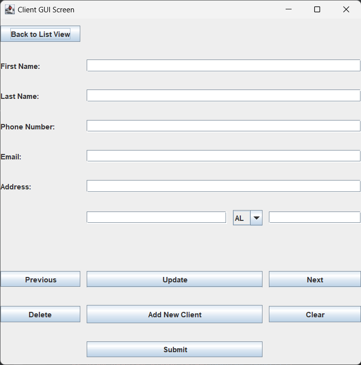
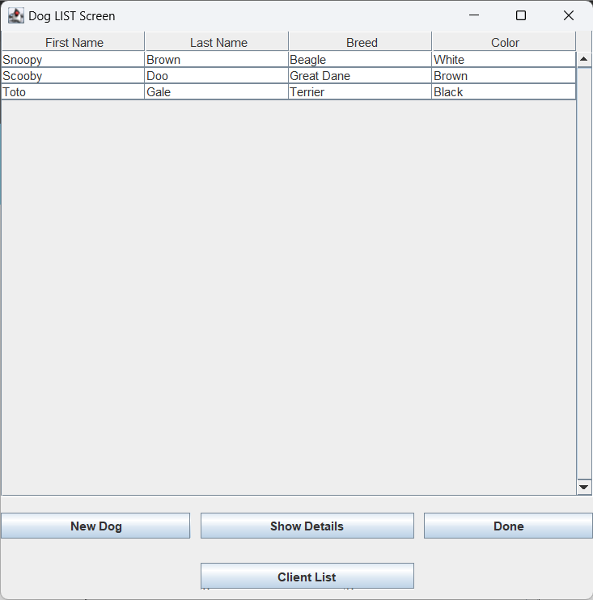
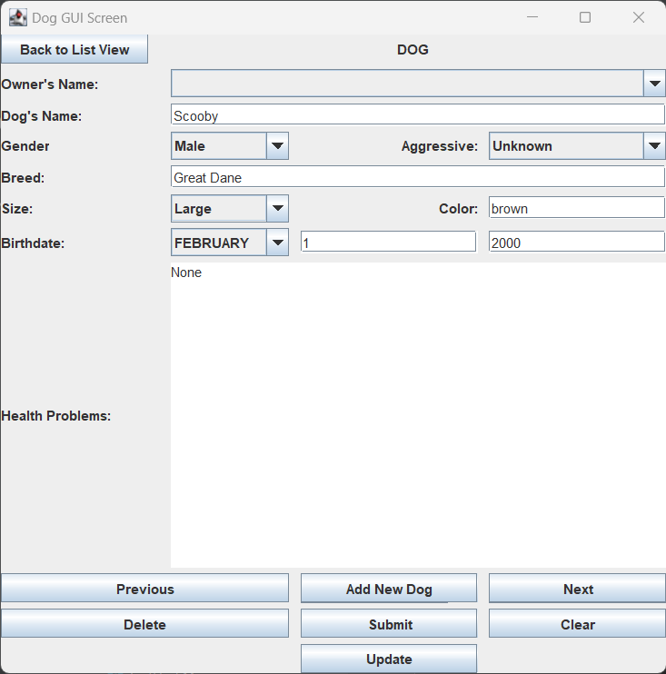
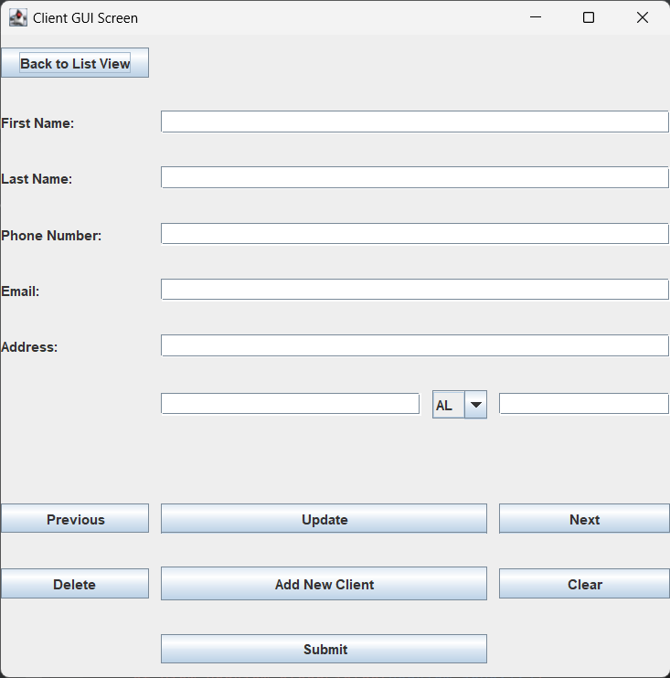
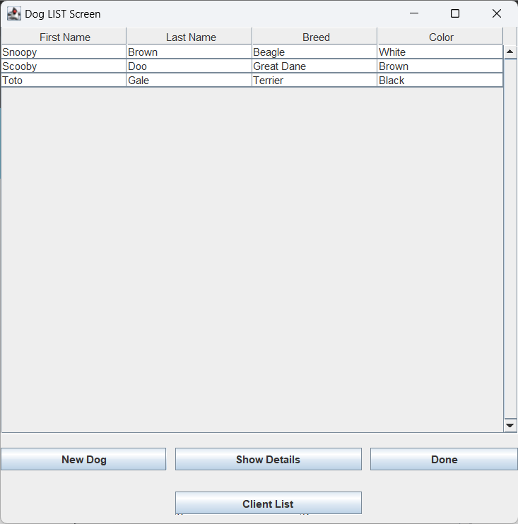
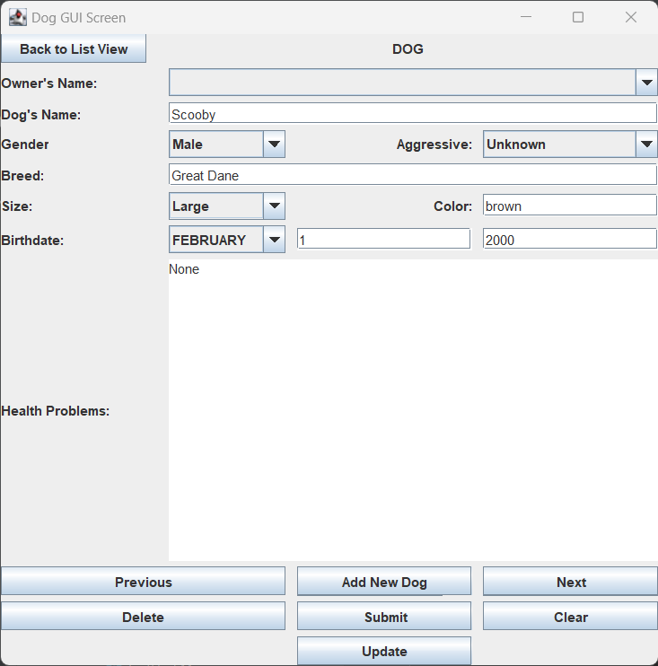

Dog Groomer's Appointment Application
The following is an individual coding project that I completed during Fall 2023.
The Problem
My sister works at the front desk of a small business that offers various services for people’s dogs include grooming, bathing, boarding, and daycare. While they have had a successful business for many years, the systems they have in place for organizing their client files and scheduling grooming appointments and boarding are not optimal. Their entire scheduling system and all of their client files are paper based. The business's current system has worked well enough in the past, but it is past due for an update. Transferring all of their files and calendars into a computer program will create much more efficient systems for organizing client information and scheduling appointments.
The business’s current filing system consists of a stack of notecards: one notecard for each owner. These notecards contain the owner’s name, phone number, email, and address as well as all of their dog(s) information (i.e. dog’s name, breed, color, date of birth, gender, and health problems). Most of the notecards also include an image of the dog(s).
While the notecard system works well enough, it easily becomes unorganized due to the vast number of clients as well as employees leaving out the notecards. Similarly, the system they use for scheduling appointments and boarding easily becomes jumbled and confusing. A planner (similar to those many students use for keeping track of their homework assignments) is used to make a list of the dogs that are to be groomed each day. In addition, a printed calendar is used to schedule dogs to be boarded. The dog’s name is written on the day they are to be dropped off and a line is drawn through each day that the dog will be boarded.
In addition to the previously mentioned systems used to schedule dogs to be groomed or boarded, the employees use an Excel sheet to keep track of the payments for each day. The name of the owner is added to the Excel sheet along with the payment amount, the tip, and the method of payment (cash, credit card, or check).
This business has been using the same system for years. While their scheduling and filing systems may have worked well when they were a newer business, the increase in clients has begun to make these systems inadequate.
Initial Proposed Solution
Currently, the dog-grooming business has multiple different systems to keep track of the dog owners/dogs, payments, grooming appointments, and boarding appointments. My solution is to create a program that allows the business to track all of these in one place.
The main screen of this program will consist of a simple calendar where all the appointments can be scheduled. This calendar will also have a filter so that the employees can filter the scheduled appointments to see only the grooming appointments, only the boarding appointments, or both.
Instead of using notecards to track client information, the program will track this information using a list. This list will be alphabetized and will include a search bar in order to find specific client information more easily. A list of the dogs will be created to keep track of their information as well. Each owner’s profile will include their name, phone number, address, email, and dog(s) name(s). Meanwhile, each dog profile will include the dog’s name, owner’s name, gender, breed, color, date of birth, photo, health issues, and a checkbox indicating whether they are aggressive or not. These lists will look similar to those shown in the images below. Clicking on the name of the client or the dog in either list will bring up the rest of that client or dog’s information.
The program will also include a list of the payments received each day. Each entry in this payment list will include the name of the owner, the date, the amount paid, tip, and the payment method (i.e. cash, check, or credit card). The entries for this list will be created through a simple form as shown in the image below.
The main risks and challenges of this project include financial limits and technical support. As the business in question is relatively small, there would be a limited budget for this project. In addition, the business may also have difficulty resolving technical issues due to their lack of experience with technology and their low budget.
Another challenge within this project is security. While this program will not be used to make payments, it would still be beneficial to keep the program secure due to the client information that the program will keep track of.
Persistent Data Strategy
Classes (and their fields) to persist:
-
Person
- String: firstName
- String: lastName
- String: number
- Address: address
- String: email
-
Payment
- Person: client
- Double: amount
- String: payment_type
- Double: tip
- Date: date
-
Dog
- String: name
- String: lastName
- Gender: gender
- String: breed
- String: color
- Date: dob
- String: health_problems
- Aggression: aggressive
- Person: owner
-
Appointments
-
Appointment
- Dog: dog
- Date: dropoff
- String: appointment_details
-
Boarding
- Date: pickup
-
Grooming
- ArrayList<String>: services
-
Appointment
The Person class must be persisted so that client information can be kept in the system between application runs. It is important for the business to always keep a record of the client’s contact information. Thus, all of the data fields in this class will be persisted: firstName, lastName, number, address, and email.
Similar to the Person class, it is important for the business to keep track of each dog’s information. Therefore, all of the data fields from this class will also be persisted. Those data fields are name, lastName, gender, breed, color, dob (i.e., date of birth), health problems, owner, and aggressive (a boolean value that states whether the dog is aggressive or not).
It is extremely important for the Appointment class, along with its subclasses Boarding and Grooming) to be persisted. These are the classes that keep track of the business’s appointments. Therefore, it is one of the most important classes to persist. The data fields for the Appointment class are dropoff date, appointment details, and dog. The Boarding class also has a field for pickup date while the Grooming class has an additional arrayList for grooming services.
Payment is also an important class to persist because this class keeps track of client payments each day. This information includes the data fields client, amount, payment type, tip, and date of transaction.
Prototype
 






Please contact me if you would like to see examples of the code for this project.
Moving Forward
Continuing with this project would first involve fixing the connection between the Dog class and the Person class. Each person is supposed to link to their dog and vice versa. If the person has more than one dog, their profile will link to another table that lists all of their dogs. Currently, the people and the dogs do not link together. Next, I would create views for the Payment class as well as the Appointment, Boarding, and Grooming classes. Once all the views are created and successfully work with each other, I would focus on adding persistence to the Payment class and the Appointment classes. Finally, I would work on adding a level of security to the program by adding a login feature.